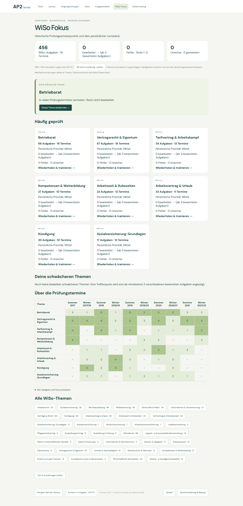
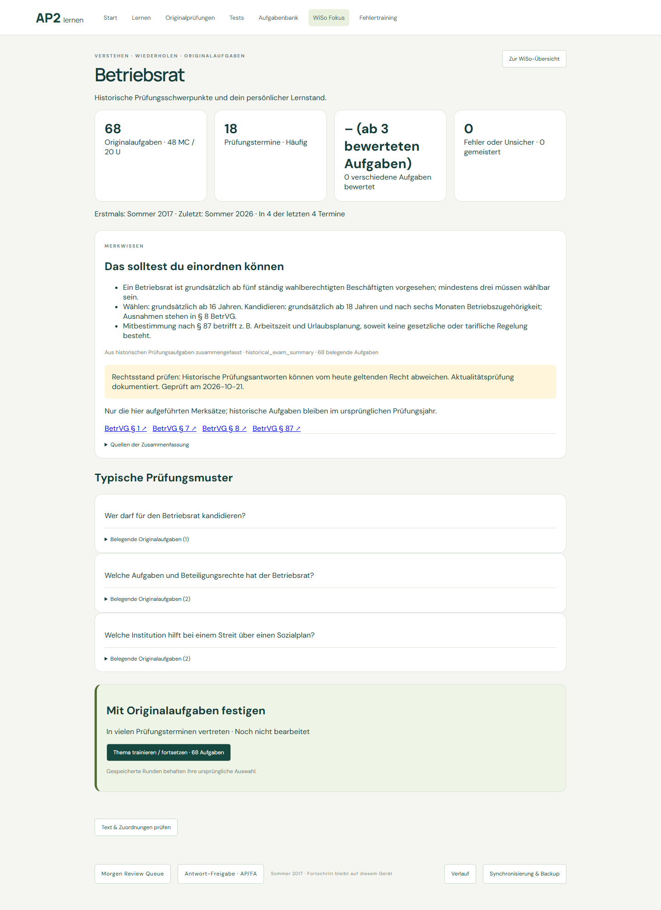
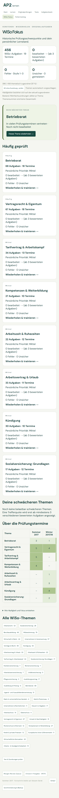
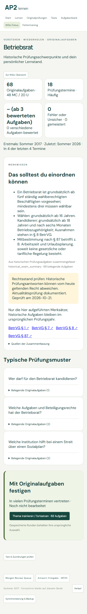
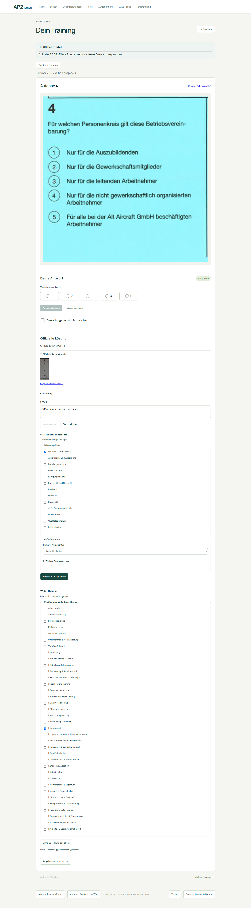

WiSo Fokus · Abnahme
Phase 3D · 21. Oktober 2026
WiSo Fokus öffnen · Betriebsrat / geprüfte Rechtsquellen · Text & Zuordnungen prüfen
Abdeckung und Grenzen
Lädt…
Themen sind maschinelle Vorschläge aus dem Aufgabentext. Die gezielte Sichtprüfung ist keine vollständige menschliche Prüfung aller Zuordnungen. Nicht zugeordnete Aufgaben bleiben in der Aufgabenbank und im Review erreichbar. Originalbilder, offizielle Antworten und Bewertung bleiben unverändert.
Nur die explizit geprüften Merksätze tragen ein Prüfdatum und amtliche Quellen. Andere rechtliche Zusammenfassungen bleiben als Aktualitätsprüfung offen gekennzeichnet; historische Prüfungsantworten behalten ihren damaligen Kontext.
Häufigkeit: Aufgaben und Prüfungstermine
Mehrfachzuordnung je Thema möglich, innerhalb eines Themas zählt jede Aufgabe genau einmal. Die vier jüngsten Termine fließen gesondert ein. Keine Vorhersage künftiger Prüfungen.
Kompatibilität und Nachweise
- Alte Training Keys unverändert; neue Themenfilter sind optional.
- Gespeicherte TrainingRuns behalten ihre Auswahl, auch nach Änderung des aktuellen Themenbestands.
- Persönliche Statistiken lesen vorhandene gültige Ergebnisse; keine Migration oder Änderung alter Lernaufzeichnungen.
- Unter drei verschiedenen bewerteten Aufgaben bleibt die Trefferquote leer. Lösung ansehen zählt nicht.
- Gesperrte manuelle Zuordnungen bleiben bei Quellenänderung erhalten und werden zur Prüfung markiert.
Ranking, Prioritäts-Fixture, Konfiguration und Quellenschutz · Text-/Cache-Bericht · Gezielte Quellen-Sichtprüfung · Browser-Prüfungen
Automatisierte Regressionen prüfen Hinzufügen, Quellenänderung, Entfernen, menschliche Sperren, unterschiedliche Prüfungstermine, verworfene/gelöschte Tests und unveränderte alte Trainingsschlüssel. Die persönliche Prioritäts-Fixture verwendet ausschließlich synthetische Daten im Arbeitsspeicher.
Desktop

Merkwissen und Rechtsquellen

Mobil


Klassifikation unter der Notiz
